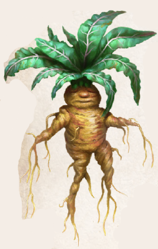

Die Alraune gedeiht unter Bäumen und bevorzugt Wälder. Ihre dunkelgrünen, runzeligen und unregelmäßig gekrausten Blätter sind beinahe stängellos. Aus den von Phex bis Peraine erscheinenden gelben Blüten entwickeln sich gleichfarbige Beeren. Beide sind nützlich, aber von untergeordneter alchimistischer Bedeutung. So stellen Kräuterkundige daraus eine Salbe her, die Linderung bei Geschwüren verspricht. Die Einnahme zerstoßener Beerensamen hilft hingegen bei Frauenleiden. Der alchimistisch bedeutsame Teil der Pflanze ist ihre fleischige, bis zu zwei Spann tief reichende Wurzel, deren Form häufig an die eines Menschen erinnert. Just diese Gestalt führt dazu, dass der Alraune von jeher wundersame Fähigkeiten zugesprochen werden und sich allerlei Aberglaube um sie rankt. So soll die Mandragora etwa nur dort gedeihen, wo zuvor ein Mensch gewaltsam zu Tode kam. Mancherorts wird ihr eine Seele zuerkannt, und hier wird sie als hilfreicher Hausgeist verehrt, dort aber als Dämonenbrut gefürchtet. Dennoch spielt sie auch in der Volksheilkunde eine Rolle. Unverarbeitet ist der Wurzelsaft ein leichtes Gift und starkes Brechmittel, wirkt, mit Honig und Schnaps vermischt, jedoch bei Verdauungsproblemen. In Wein gekochte Wurzelstücke ergeben ein Mittel gegen Schlaflosigkeit, das zudem Schmerzen dämpft und darum auch als Betäubungsmittel eingesetzt wird.
Ihre wahre Kraft entfaltet die Wurzel jedoch, wenn sie durch schlichtes Beimengen die Haltbarkeit vieler Tränke verlängert. Die Prozedur ist denkbar einfach und bedarf keiner speziellen Gerätschaften, weswegen sich auch Laien daran versuchen. Doch auch der frische Alraunengeruch ändert nichts an der Wirkungslosigkeit eines Gebräus, das seine Haltbarkeit überschritten hat. In Alkohol eingelegte und gekochte Wurzelscheiben ergeben Alraunensud, eine verstärkende Zutat für Elixiere.
Alternative Namen: Galgenmännchen, Glücksmännlein/-weiblein, Al`Rawn oder Al`Râ`un (Tulamidya), Albruna (Thorwalsch), Mandragora (Isdira)
Verbreitung:
Landschaftstyp: Wälder, Regenwälder
Regionen: Wälder des Nordens, Mittelländische Wälder (gemäßigtes, tobrisches und yaquirisches Klima), Immergrüne Wälder (Südosten), überall sonst sehr selten
Suchschwierigkeit: -3
Bestimmungsschwierigkeit: -2
Anwendungen: 1/1/1/1/1/1
Wirkung:
Roh:
Berührung: keine
Einatmung: keine
Verzehr: leicht giftig (Stufe: 1, Wirkung: 1 SP, Dauer: sofort)
Verarbeitet: siehe Rezepte
Preis: 3 / 5 Silbertaler
Rezepte:
Pflanzliche Gifte: Mandragora
Elixiere: in diversen Rezepten als verstärkende Zutat, Alrauniger Homunculus
Alchimistische Gifte: in diversen Rezepten als verstärkende Zutat
Alltagsarzneien und Volksbrauchtum: Salbe gegen Geschwüre (Blüten, Beeren), Mittel gegen Menstruationsleiden (Beerensamen), Mittel gegen Verdauungsprobleme (Wurzelsaft), leichtes Beruhigungsmittel (Wurzelfaser), starkes Brechmittel (Wurzel).
Sie soll Glück und Reichtum bringen, vor Gefängnis und Verwundung schützen, wenn man ihr einen menschlichen Namen gibt.
Im Bornland kleidet man sie bisweilen sogar in Puppenkleider und setzt sie mit an den Tisch.
Vor dem eigenen Tod solle man die Wurzel jedoch wieder loswerden, da man sonst verdammt sei.
In Alraunensud sollen Knochen kurzzeitig weich und formbar werden.
Haltbarkeit:
Roh: siehe Haltbarmachung
Verarbeitet: Alraunensud 12 Monate, eingelegte Alraunwurzel 12 Monate